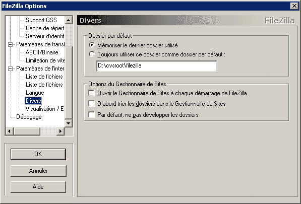

Options Diverses
Vue d'ensemble:
Dans cette section vous pourrez régler quelques options diverses concernant l'interface.

Dossier par défaut
Vous pouvez entrer ici le dossier local qui sera utilisé par FileZilla au démarrage. Si vous sélectionnez "Mémoriser le dernier dossier utilisé", FileZilla utilisera le dossier qui a été utilisé la dernière fois que vous avez travaillé avec FileZilla. Si vous sélectionnez "Toujours utiliser ce dossier comme dossier par défaut", FileZilla basculera systématiquement vers ce dossier quand vous lancerez le programme.
Options du Gestionnaire de Sites
Ouvrir le Gestionnaire de Sites à chaque lancement de FileZilla
Si cette option est sélectionnée, le Gestionnaire de Sites sera ouvert chaque fois que vous lancerez FileZilla.
Trier d'abord les dossiers dans le Gestionnaire de Sites
Si cette option est sélectionnée, l'arborescence du Gestionnaire de Sites sera triée avec tous les dossiers apparaissant sous Sites FTP.
Par défaut, ne pas développer les dossiers
Si cette option est sélectionnée, le Gestionnaire de Sites ne développera pas automatiquement ses dossiers à son ouverture.